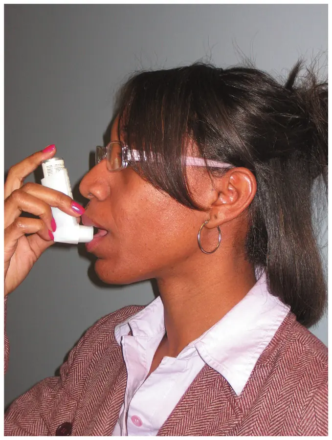

نسخه استخراجشده؛ ترجمه یا تأیید علمی انجام نشده است. وضعیت: captured
مرد ۴۵ سالهی آسمی حین کشیدن دندان خسخس میکند و میگوید نفسش بالا نمیآید. هوشیار است و جواب میدهد. از کجا شروع میکنی؟

سالبوتامول گشادکنندهی کوتاهاثر برونش (بتا۲ آگونیست) است و ظرف حدود ۵ دقیقه اثر میکند؛ برای همین داروی انتخابی حمله است. اسپری کورتیکواستروئید استنشاقی، مونتهلوکاست و کرومولین داروی کنترل طولانیمدتاند و حمله را باز نمیکنند.
اشتباه رایج: خواباندن بیمار به پشت، مثل سنکوپ. در حملهی آسم بیمار نشسته راحتتر نفس میکشد و وضعیت خوابیده تنفسش را سختتر میکند.
اگر پس از ۴ پاف حمله برطرف نشد، یا از همان آغاز علائم حملهی شدید دیده میشود، منتظر نمان:
اپینفرین قویترین و سریعترین داروی باز کردن برونش در مطب است. درمانهای وریدی بعدی کار تیم اورژانس است.
اگر خسخس با کهیر، تورم لب یا افت فشار همراه است، با آنافیلاکسی روبهرویی: اپینفرین عضلانی را معطل اسپری نکن.
وقتی حمله برطرف شد، بیمار را در مطب زیر نظر بگیر و در آن جلسه درمان دندانپزشکی را ادامه نده. پیش از جلسهی بعد، با پزشک او دربارهی کنترل آسم مشورت کن.